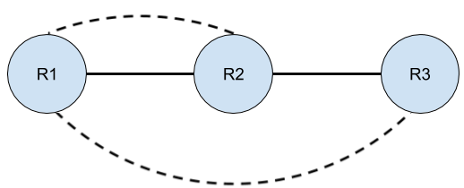
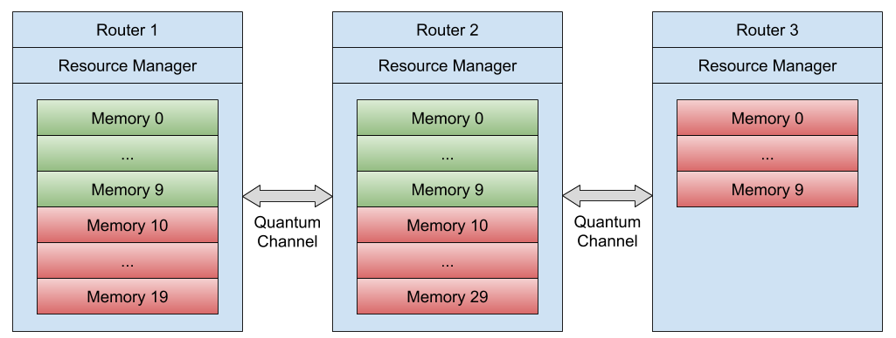
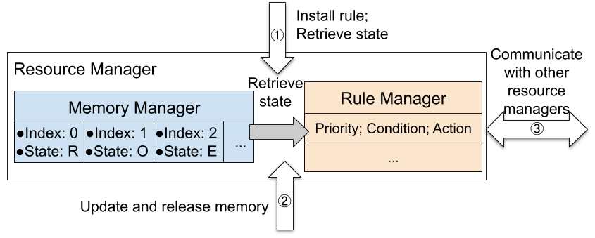

Chapter 4: Resource Management¶
In this tutorial, we will show the usual operation of the Resource Management module included in SeQUeNCe. We’re going to build a linear, three-node network and create two entanglement flows. The network, including flows, is shown below:

We’ll be using custom rules to create our two flows. Each flow will attempt to entangle 10 pairs, so we will reserve the memories as follows, with green denoting flow 1 and red denoting flow 2:

We will also be creating a custom node class to meet the requirements of this experiment, in a similar manner to past tutorials.
Background¶
The Resource Management module in SeQUeNCe is responsible for managing the usage of and flow of information from hardware elements on a node. This is achieved with an internal memory manager and rule manager, as shown below:

The memory manager is used to track the current state of all quantum memories (including entanglement, fidelity, etc.) while thie rule manager uses a set of “rules” (containing a priority, condition to be met, and action to take) to direct local protocols.
Step 1: Create custom node type¶
We will first create a custom node type based on the QuantumRouter node from SeQUeNCe. Our node will need to include the memory array hardware and a resource manager, as well as some functions to handle normal operations of the node. The first function we will need to edit is the received_message method, similar to other tutorials. In this case we will need to add a line to handle messages for the resource manager. We will also need a method get_idle_memories, used by the resource manager to interact with any applications present (see tutorial 6). In our case, we can leave this method empty.
from sequence.topology.node import Node
from sequence.components.memory import MemoryArray
from sequence.resource_management.resource_manager import ResourceManager
class RouterNode(Node):
def __init__(self, name, tl, memo_size=50):
super().__init__(name, tl)
self.memory_array = MemoryArray(name + ".MemoryArray", tl, num_memories=memo_size)
self.memory_array.owner = self
self.resource_manager = ResourceManager(self)
def receive_message(self, src: str, msg: "Message") -> None:
if msg.receiver == "resource_manager":
self.resource_manager.received_message(src, msg)
else:
if msg.receiver is None:
matching = [p for p in self.protocols if type(p) == msg.protocol_type]
for p in matching:
p.received_message(src, msg)
else:
for protocol in self.protocols:
if protocol.name == msg.receiver:
protocol.received_message(src, msg)
break
def get_idle_memory(self, info: "MemoryInfo") -> None:
pass
Step 2: Create Rule Conditions for Flow 1¶
We’re going to focus on custom rules for the short-range entanglement between routers 1 and 2 first. Our first step is
to define the rule conditions for this process that will be used by the resource manager to generate entanglement. In
our case, we will simply use all available memories with the indices {0 ... 9} to generate entanglement between the
nodes. We implement a general condition function for choosing RAW memories with indices between index_lower
and index_upper. Our condition is thus relatively simple:
def eg_rule_condition(memory_info: "MemoryInfo", manager: "MemoryManager", args):
index_upper = args["index_upper"]
index_lower = args["index_lower"]
if memory_info.state == "RAW" \
and index_lower <= memory_info.index <= index_upper:
return [memory_info]
else:
return []
# args = {"index_lower": 0, "index_upper": 9}
Rule conditions take 3 arguments:
memory_info, containing the information stored in the memory manager,manager, which is a reference to the memory manager, anndargs, which is a dictionary to store values of other arguments, likeindex_upperandindex_lower
In our case, we will use any memories in the RAW (unentangled) state. Other possible memory states are OCCUPIED (for
memories in use by some protocol) and ENTANGLED (for memories currently entangled with another, possibly distant,
memory). If our desired condition is met, we will return the memory_info as a valid memory. Otherwise, we return
nothing.
The arguments for args for flow 1 are shown in the bottom comment.
We will create a variable to store these when we load the rule into the rule manager.
Step 3: Create Rule Actions for Flow 1¶
Next, we will dictate what the resource manager should do when our custom condition is met. This is performed with a rule action.
Rule actions are provided one argument by the resource manager: a list of memory_info objects that have met the
condition of the rule. They should return four objects:
Any protocols created,
A list of nodes of which there are other requirements for operation,
Requirements that should be met on other nodes, and
Arguments for the requirements function.
In our case, we will create an entanglement generation protocol on both nodes and have router 1 confirm that router 2
has created a protocol. eg_rule_action1 will give the action for router 1 (including sending a requirement to router
2), and eg_rule_action2 will give the action for router 2. The action on router 1 will create
the EntanglementGenerationA protocol and request the corresponding protocol from router 2 by sending the
function eg_req_func and its arguments req_args. The req_args contain constraints about the target protocol. In
this example, we use the type of protocol and memory index to filter the proper protocol. The action on router 2 will
create an EntanglementGenerationA protocol and wait for a request from router 1. The mid_name
and other_name in args define the name of BSM node and the other router used for generating entanglement. Note that
the name of router 1 will be “r1”, the name of router 2 will be “r2”, and the name of the intermediate measurement
node (see tutorial 3 for details) will be “m12”, which will be set when loading rules.
from sequence.entanglement_management.generation import EntanglementGenerationA
def eg_req_func(protocols, args):
remote_node = args["remote_node"]
index_upper = args["index_upper"]
index_lower = args["index_lower"]
for protocol in protocols:
if not isinstance(protocol, EntanglementGenerationA):
continue
index_func = protocol.memory.owner.memory_array.memories.index
if protocol.remote_node_name == remote_node \
and index_lower <= index_func(protocol.memory) <= index_upper:
return protocol
def eg_rule_action1(memories_info: List["MemoryInfo"], args):
mid_name = args["mid_name"]
other_name = args["other_name"]
memories = [info.memory for info in memories_info]
memory = memories[0]
protocol = EntanglementGenerationA(None, "EGA." + memory.name, mid_name,
other_name,
memory)
req_args = {"remote_node": args["node_name"],
"index_upper": args["index_upper"],
"index_lower": args["index_lower"]}
return [protocol, [other_name], [eg_req_func], [req_args]]
def eg_rule_action2(memories_info: List["MemoryInfo"], args):
mid_name = args["mid_name"]
other_name = args["other_name"]
memories = [info.memory for info in memories_info]
memory = memories[0]
protocol = EntanglementGenerationA(None, "EGA." + memory.name,
mid_name, other_name, memory)
return [protocol, [None], [None], [None]]
Step 4: Build the Network¶
We’ll now actually build our network and get ready to run the simulation. We will include the third router node, as this
will be used for our second flow, but we will not use it in our first experiment. Also note that we have left the
timeline show_progress attribute as its default true value, unlike previous tutorials. This will show a progress bar
of the simulation during execution. This is most useful for longer experiments, where a user might wish to estimate the
time remaining for a simulation.
from sequence.kernel.timeline import Timeline
from sequence.topology.node import BSMNode
from sequence.components.optical_channel import ClassicalChannel, QuantumChannel
runtime = 10e12
tl = Timeline(runtime)
# nodes
r1 = RouterNode("r1", tl, memo_size=20)
r2 = RouterNode("r2", tl, memo_size=40)
r3 = RouterNode("r3", tl, memo_size=10)
m12 = BSMNode("m12", tl, ["r1", "r2"])
m23 = BSMNode("m23", tl, ["r2", "r3"])
node_list = [r1, r2, r3, m12, m23]
for i, node in enumerate(node_list):
node.set_seed(i)
# create all-to-all classical connections
cc_delay = 1e9
for node1 in node_list:
for node2 in node_list:
cc = ClassicalChannel("cc_%s_%s"%(node1.name, node2.name), tl, 1e3, delay=cc_delay)
cc.set_ends(node1, node2.name)
# create quantum channels linking r1 and r2 to m1
qc_atten = 0
qc_dist = 1e3
qc1 = QuantumChannel("qc_r1_m12", tl, qc_atten, qc_dist)
qc1.set_ends(r1, m12.name)
qc2 = QuantumChannel("qc_r2_m12", tl, qc_atten, qc_dist)
qc2.set_ends(r2, m12.name)
# create quantum channels linking r2 and r3 to m2
qc3 = QuantumChannel("qc_r2_m23", tl, qc_atten, qc_dist)
qc3.set_ends(r2, m23.name)
qc4 = QuantumChannel("qc_r3_m23", tl, qc_atten, qc_dist)
qc4.set_ends(r3, m23.name)
Step 5: Run the Simulation with 1 Flow¶
Finally, we can run our initial simulation, including installation of our custom rules. We will start our entanglement
flow at the beginning of the simulation by installing the rules. Rules are created with a priority, rule action, rule
condition, and arguments of action and condition, while rules are installed with the load method of the resource
manager. For flow 1, routers r1 and r2 will use BSM node m12 and memories with indicies between 0 and 9 to
generate entanglement. These are specified in the action and condition args.
from sequence.resource_management.rule_manager import Rule
tl.init()
# load rules
action_args = {"mid_name": "m12", "other_name": "r2", "node_name": "r1",
"index_upper": 9, "index_lower": 0}
condition_args = {"index_lower": 0, "index_upper": 9}
rule1 = Rule(10, eg_rule_action1, eg_rule_condition, action_args,
condition_args)
r1.resource_manager.load(rule1)
action_args2 = {"mid_name": "m12", "other_name": "r1"}
rule2 = Rule(10, eg_rule_action2, eg_rule_condition, action_args2,
condition_args)
r2.resource_manager.load(rule2)
tl.run()
print("Router 1 Memories")
print("Index:\tEntangled Node:\tFidelity:\tEntanglement Time:")
for i, info in enumerate(r1.resource_manager.memory_manager):
print("{:6}\t{:15}\t{:9}\t{}".format(str(i), str(info.remote_node),
str(info.fidelity), str(info.entangle_time * 1e-12)))
At the end of our simulation, we will print out for each memory (on router 1):
The memory index,
The node to which the memory is entangled,
The fidelity of entanglement, and
The time at which it was entangled.
We should notice that all of the memories 0-9 are entangled with router 2 within a short time.
Step 6: Flow 2 Entanglement Generation¶
Now, we’ll create the custom rules to control our second flow between routers 1 and 3. The first step is again to set up entanglement generation in a similar manner to the first flow. To do this, we’ll create a function add_eg_rules that takes as arguments
index, the index of the router (in the path) we will be adding rules to,path, a list of router nodes that make up the path of the entanglement flow, andmiddles, a list of bsm nodes along the path.
The conditions and actions of the rule will be very similar to before, but with variable memory indices, nodes, and arguments.
def add_eg_rules(index: int, path: List[RouterNode], middles: List[BSMNode]):
assert len(path) == len(middles) + 1
node_names = [node.name for node in path]
middle_names = [node.name for node in middles]
node_mems = [[10, 20], [10, 30], [0, 10]]
node = path[index]
mem_range = node_mems[index]
if index > 0:
action_args = {"mid_name": middle_names[index - 1],
"other_name": node_names[index - 1]}
condition_args = {"index_lower": mem_range[0],
"index_upper": mem_range[0] + 9}
rule = Rule(10, eg_rule_action2, eg_rule_condition, action_args,
condition_args)
node.resource_manager.load(rule)
if index < (len(path) - 1):
if index == 0:
condition_args = {"index_lower": mem_range[0],
"index_upper": mem_range[1] - 1}
else:
condition_args = {"index_lower": mem_range[1] - 10,
"index_upper": mem_range[1] - 1}
action_args = {"mid_name": middle_names[index],
"other_name": node_names[index + 1],
"node_name": node.name,
"index_upper": node_mems[index + 1][1] - 1,
"index_lower": node_mems[index + 1][0]}
memories = [info.memory for info in memories_info]
memory = memories[0]
protocol = EntanglementGenerationA(None, "EGA." + memory.name, middle_names[index], node_names[index + 1],
memory)
return [protocol, [node_names[index + 1]], [req_func]]
rule = Rule(10, eg_rule_action, eg_rule_condition)
node.resource_manager.load(rule)
Step 7: Flow 2 Entanglement Purification¶
We’ll next create rules for entanglement purification. Our rule conditions will be a little different,
as we will want memories to be in the ENTANGLED state with fidelity below some threshold (that we wish to improve).
Each protocol will also need two memories, one of which will be consumed while the fidelity of the other increases.
The arguments for our add_ep_rules function will be similar to our previous function:
index, the index of the router (in the path) we will be adding rules to,path, a list of router nodes that make up the path of the entanglement flow, andtarget_fidelity, the fidelity of entanglement we wish to achieve.
from sequence.entanglement_management.purification import BBPSSW
def add_ep_rules(index: int, path: List[RouterNode], target_fidelity: float):
node_names = [node.name for node in path]
node_mems = [[10, 20], [10, 30], [0, 10]]
node = path[index]
mem_range = node_mems[index]
if index > 0:
def ep_rule_condition(memory_info: "MemoryInfo", manager: "MemoryManager"):
if (memory_info.index in range(mem_range[0], mem_range[1]) and memory_info.state == "ENTANGLED" and memory_info.fidelity < target_fidelity):
for info in manager:
if (info != memory_info and info.index in range(mem_range[0], mem_range[1])[:10]
and info.state == "ENTANGLED" and info.remote_node == memory_info.remote_node
and info.fidelity == memory_info.fidelity):
assert memory_info.remote_memo != info.remote_memo
return [memory_info, info]
return []
def ep_rule_action(memories_info: List["MemoryInfo"]):
memories = [info.memory for info in memories_info]
def req_func(protocols):
_protocols = []
for protocol in protocols:
if not isinstance(protocol, BBPSSW):
continue
if protocol.kept_memo.name == memories_info[0].remote_memo:
_protocols.insert(0, protocol)
if protocol.kept_memo.name == memories_info[1].remote_memo:
_protocols.insert(1, protocol)
if len(_protocols) != 2:
return None
protocols.remove(_protocols[1])
_protocols[1].rule.protocols.remove(_protocols[1])
_protocols[1].kept_memo.detach(_protocols[1])
_protocols[0].meas_memo = _protocols[1].kept_memo
_protocols[0].memories = [_protocols[0].kept_memo, _protocols[0].meas_memo]
_protocols[0].name = _protocols[0].name + "." + _protocols[0].meas_memo.name
_protocols[0].meas_memo.attach(_protocols[0])
_protocols[0].t0 = _protocols[0].kept_memo.timeline.now()
return _protocols[0]
name = "EP.%s.%s" % (memories[0].name, memories[1].name)
protocol = BBPSSW(None, name, memories[0], memories[1])
dsts = [memories_info[0].remote_node]
req_funcs = [req_func]
return [protocol, dsts, req_funcs]
rule = Rule(10, ep_rule_action, ep_rule_condition)
node.resource_manager.load(rule)
if index < len(path) - 1:
if index == 0:
def ep_rule_condition(memory_info: "MemoryInfo", manager: "MemoryManager"):
if (memory_info.index in range(mem_range[0], mem_range[1])
and memory_info.state == "ENTANGLED" and memory_info.fidelity < target_fidelity):
return [memory_info]
return []
else:
def ep_rule_condition(memory_info: "MemoryInfo", manager: "MemoryManager"):
if (memory_info.index in range(mem_range[0], mem_range[1])[10:]
and memory_info.state == "ENTANGLED" and memory_info.fidelity < target_fidelity):
return [memory_info]
return []
def ep_rule_action(memories_info: List["MemoryInfo"]):
memories = [info.memory for info in memories_info]
name = "EP.%s" % (memories[0].name)
protocol = BBPSSW(None, name, memories[0], None)
return protocol, [None], [None]
rule = Rule(10, ep_rule_action, ep_rule_condition)
node.resource_manager.load(rule)
Step 8: Flow 2 Entanglement Swapping¶
Finally, we’ll generate rules for entanglement swapping. The rules will be a little more complicated as we require different protocols for the intermediate and end routers (see tutorial 3). However, the basic principles of rule creation remain the same, requiring a condition and an action. Our condition will be that we have memory pairs in the ENTANGLED state between the intermediate and each end router, and that the fidelity of the memory state is above some threshold. Our arguments will thus be as follows:
index, the index of the router (in the path) we will be adding rules to,path, a list of router nodes that make up the path of the entanglement flow,target_fidelity, the fidelity of entanglement we wish to achieve,succ_prob, the probability of success for the swapping operation, anddegredation, the degradation of entanglement fidelity after the swapping operation.
Also note that the code to generate swapping rules is much longer than our previous rules. Luckily, this will be done automatically by the network manager in future tutorials.
from sequence.entanglement_management.swapping import EntanglementSwappingA, EntanglementSwappingB
def add_es_rules(index: int, path: List[RouterNode], target_fidelity: float, succ_prob: float, degradation: float):
node_names = [node.name for node in path]
node_mems = [[10, 20], [10, 30], [0, 10]]
node = path[index]
mem_range = node_mems[index]
def es_rule_actionB(memories_info: List["MemoryInfo"]):
memories = [info.memory for info in memories_info]
memory = memories[0]
protocol = EntanglementSwappingB(None, "ESB." + memory.name, memory)
return [protocol, [None], [None]]
if index == 0:
def es_rule_condition(memory_info: "MemoryInfo", manager: "MemoryManager"):
if (memory_info.state == "ENTANGLED"
and memory_info.index in range(mem_range[0], mem_range[1])
and memory_info.remote_node != node_names[-1]
and memory_info.fidelity >= target_fidelity):
return [memory_info]
else:
return []
rule = Rule(10, es_rule_actionB, es_rule_condition)
node.resource_manager.load(rule)
elif index == len(path) - 1:
def es_rule_condition(memory_info: "MemoryInfo", manager: "MemoryManager"):
if (memory_info.state == "ENTANGLED"
and memory_info.index in range(mem_range[0], mem_range[1])
and memory_info.remote_node != node_names[0]
and memory_info.fidelity >= target_fidelity):
return [memory_info]
else:
return []
rule = Rule(10, es_rule_actionB, es_rule_condition)
node.resource_manager.load(rule)
else:
_path = node_names[:]
while _path.index(node.name) % 2 == 0:
new_path = []
for i, n in enumerate(_path):
if i % 2 == 0 or i == len(path) - 1:
new_path.append(n)
_path = new_path
_index = _path.index(node.name)
left, right = _path[_index - 1], _path[_index + 1]
def es_rule_conditionA(memory_info: "MemoryInfo", manager: "MemoryManager"):
if (memory_info.state == "ENTANGLED"
and memory_info.index in range(mem_range[0], mem_range[1])
and memory_info.remote_node == left
and memory_info.fidelity >= target_fidelity):
for info in manager:
if (info.state == "ENTANGLED"
and info.index in range(mem_range[0], mem_range[1])
and info.remote_node == right
and info.fidelity >= target_fidelity):
return [memory_info, info]
elif (memory_info.state == "ENTANGLED"
and memory_info.index in range(mem_range[0], mem_range[1])
and memory_info.remote_node == right
and memory_info.fidelity >= target_fidelity):
for info in manager:
if (info.state == "ENTANGLED"
and info.index in range(mem_range[0], mem_range[1])
and info.remote_node == left
and info.fidelity >= target_fidelity):
return [memory_info, info]
return []
def es_rule_actionA(memories_info: List["MemoryInfo"]):
memories = [info.memory for info in memories_info]
def req_func1(protocols):
for protocol in protocols:
if (isinstance(protocol, EntanglementSwappingB)
and protocol.memory.name == memories_info[0].remote_memo):
return protocol
def req_func2(protocols):
for protocol in protocols:
if (isinstance(protocol, EntanglementSwappingB)
and protocol.memory.name == memories_info[1].remote_memo):
return protocol
protocol = EntanglementSwappingA(None, "ESA.%s.%s" % (memories[0].name, memories[1].name),
memories[0], memories[1],
success_prob=succ_prob, degradation=degradation)
dsts = [info.remote_node for info in memories_info]
req_funcs = [req_func1, req_func2]
return [protocol, dsts, req_funcs]
rule = Rule(10, es_rule_actionA, es_rule_conditionA)
node.resource_manager.load(rule)
def es_rule_conditionB(memory_info: "MemoryInfo", manager: "MemoryManager") -> List["MemoryInfo"]:
if (memory_info.state == "ENTANGLED"
and memory_info.index in range(mem_range[0], mem_range[1])
and memory_info.remote_node not in [left, right]
and memory_info.fidelity >= target_fidelity):
return [memory_info]
else:
return []
rule = Rule(10, es_rule_actionB, es_rule_conditionB)
node.resource_manager.load(rule)
Step 9: Run the Simulation Again¶
We will now run the simulation again, adding in our new custom rules for the second flow. We will also add code to display memory information on routers 2 and 3. We should observe long-distance entanglement between routers 1 and 3 alongside the short distance entanglement from our first experiment.
tl.init()
# load rules
rule1 = Rule(10, eg_rule_action_f1_1, eg_rule_condition_f1)
r1.resource_manager.load(rule1)
rule2 = Rule(10, eg_rule_action_f1_2, eg_rule_condition_f1)
r2.resource_manager.load(rule2)
for i in range(3):
add_eg_rules(i, [r1, r2, r3], [m12, m23])
add_ep_rules(i, [r1, r2, r3], 0.9)
add_es_rules(i, [r1, r2, r3], 0.9, 1, 1)
tl.run()
print("Router 1 Memories")
print("Index:\tEntangled Node:\tFidelity:\tEntanglement Time:")
for i, info in enumerate(r1.resource_manager.memory_manager):
print("{:6}\t{:15}\t{:9}\t{}".format(str(i), str(info.remote_node),
str(info.fidelity), str(info.entangle_time * 1e-12)))
print("Router 2 Memories")
print("Index:\tEntangled Node:\tFidelity:\tEntanglement Time:")
for i, info in enumerate(r2.resource_manager.memory_manager):
print("{:6}\t{:15}\t{:9}\t{}".format(str(i), str(info.remote_node),
str(info.fidelity), str(info.entangle_time * 1e-12)))
print("Router 3 Memories")
print("Index:\tEntangled Node:\tFidelity:\tEntanglement Time:")
for i, info in enumerate(r3.resource_manager.memory_manager):
print("{:6}\t{:15}\t{:9}\t{}".format(str(i), str(info.remote_node),
str(info.fidelity), str(info.entangle_time * 1e-12)))